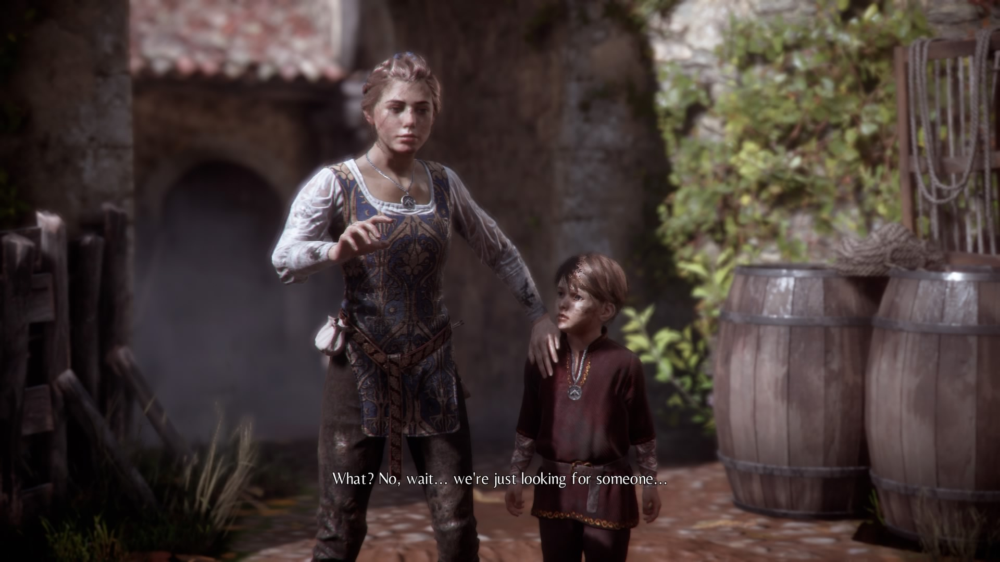
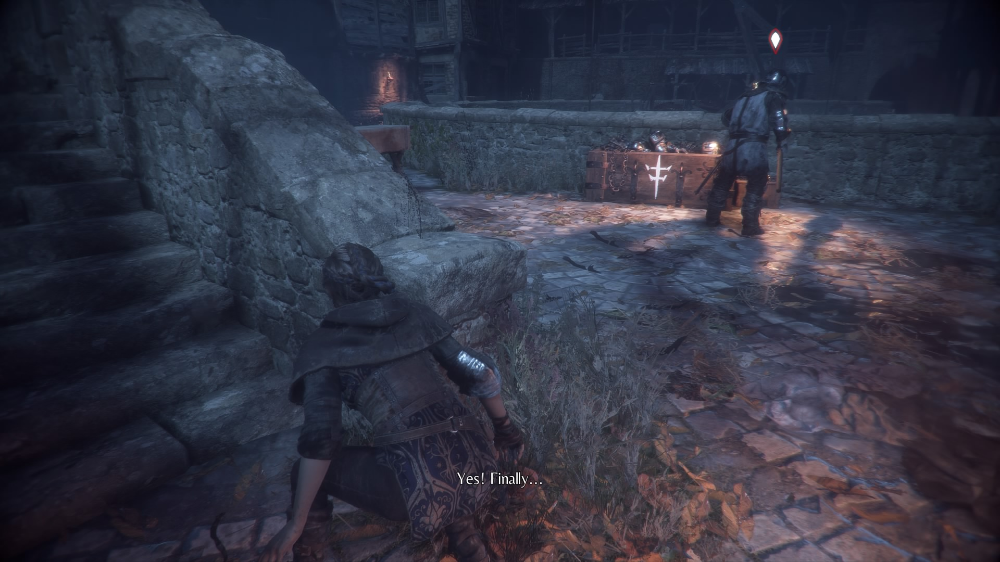
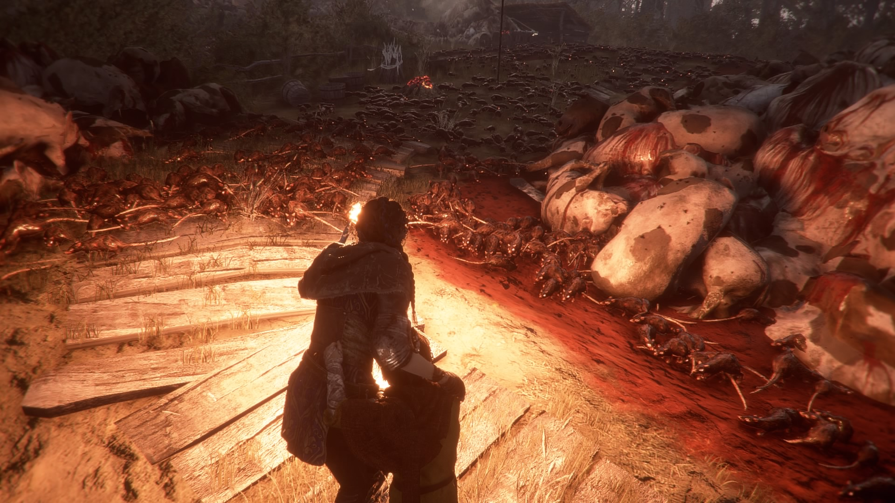

A Plague Tale: Innocence
Reviewed on a base Playstation 4
A Plague Tale: Innocence is a mixture between action-adventure, stealth and survival horror developed by Asobo Studio. Plague is a smaller title compared to most popular franchises like Call of Duty because Plague didn't have a massive budget or a big studio developing it.
A Plague Tale: Innocence takes place during the 14th century, more specifically in the wake of the Bubonic plague. The story follows Amicia de Rune a young woman living with her family in Aquitaine when the Inquisition invades her home and is left to take care of her little brother Hugo who is cursed with a mysterious illness. Due to his condition worsening, Amicia must take him to safety and find doctor Laurentius, the family doctor.
Plague is a narrative experience with tons of cutscenes, character development and minimal combat scenarios. Due to being narrative, Plague is linear with areas that are explorable but limited and the game is split into chapters. Combat is used in certain situations but most of the time stealth is the only way to proceed, with the exception of the flesh eating rats.
Amicia has an array of tools she can use to by pass all threats with ease like the sling that shoots projectiles at enemies, throw objects to distract enemies to get by. Amicia can also upgrade her equipment with materials she gathers throught her journey and craft ammunition. Since Hugo is part of Amicia's journey, he can help his sister with obstacles that he can only reach and has to listen when Amicia wants him to stay or follow, but will start to panic if she strays to far or is left alone for too long; this mechanic is less annoying than it sounds and is used sparadically. The flesh eating rats are disgusting to look at when they are grouped up like a horde of zombies and will only attack in darkness. The rats are mostly used for puzzles but also for combat to get rid of human enemies by taking out lights near them.
A Plague Tale: Innocence's frame rate is stable throught the experience for me atleast but suffers with load times in between chapters that is a minor incovenience. The era is beautifully captured by the visuals, the characters are well developed and the story is compelling. This game is worth experiencing for it's story and execution of Asobo Studio's vision.